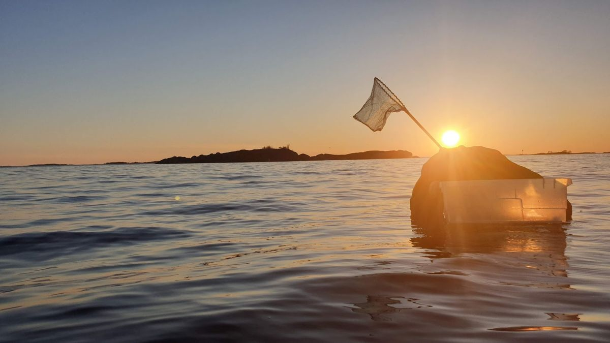
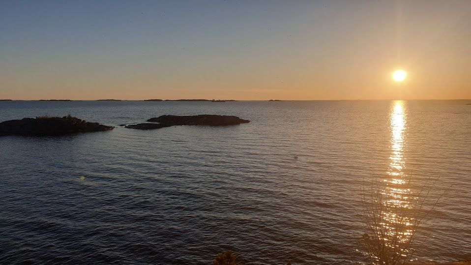
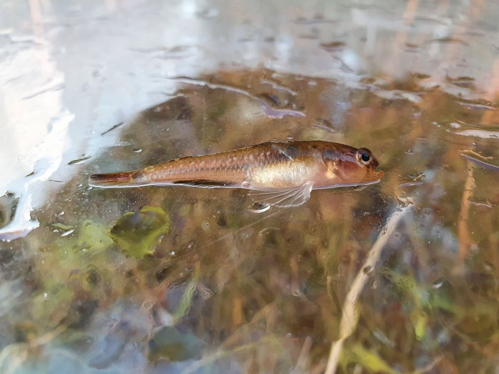
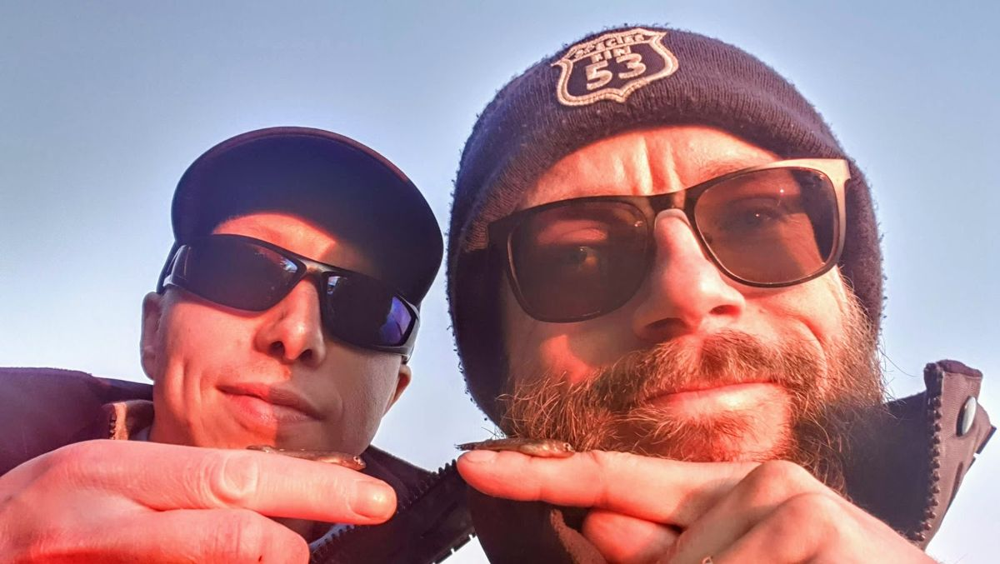
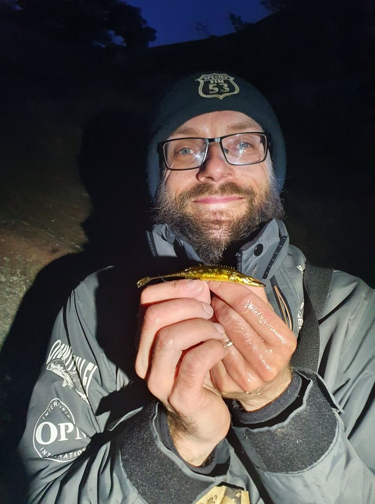
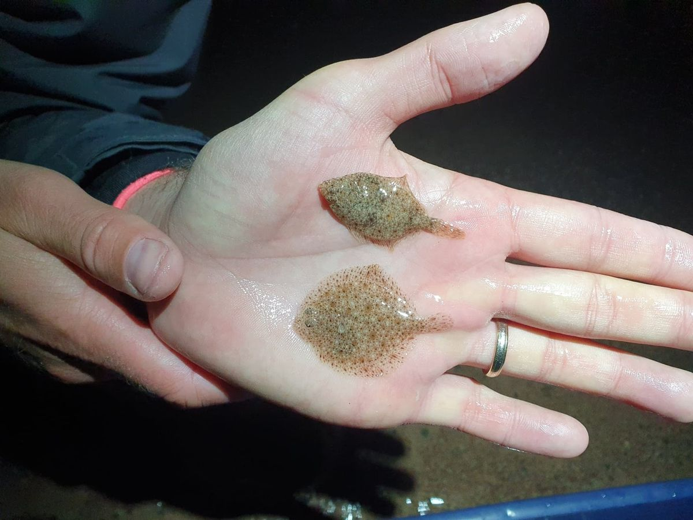
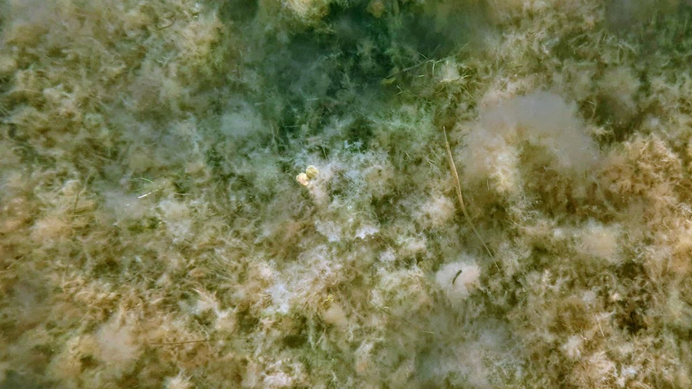
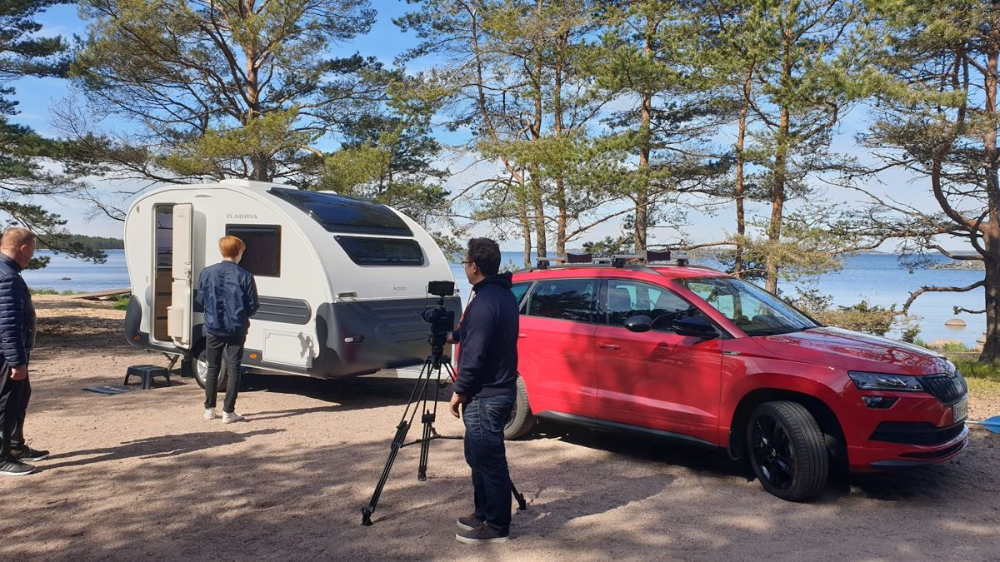
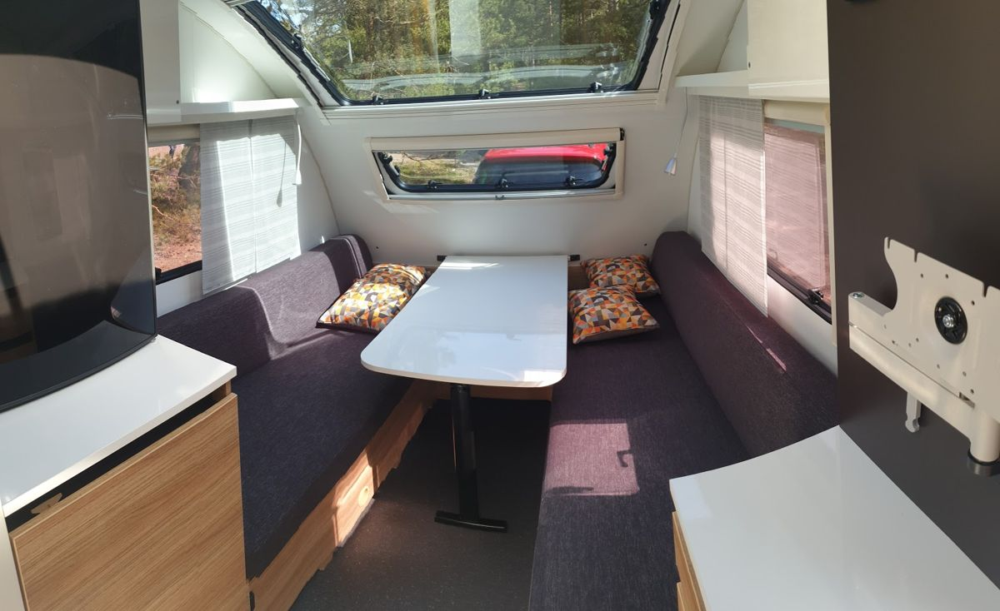
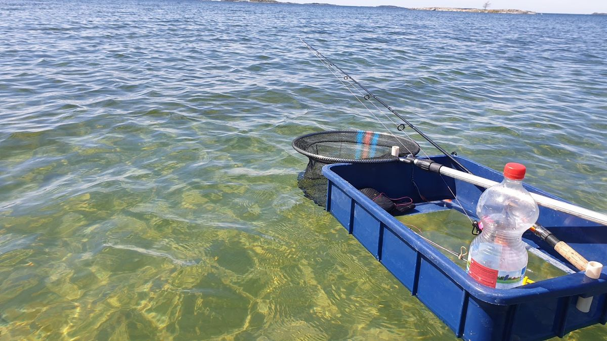

Blogitekstit · Toukokuu 2020
Kylmää, kosteaa - kuumia tunteita ja upeita onnistumisia


Hanko – tuo pitkien juoksuhiekalta tuntuvien rantojen täyttämä Suomen eteläisin kärki kutsuu fongausregatan viikonloppu reissulle. Kesäisin rannat täyttyvät augingonpalvojista, noista vähäpukeisista ihmisistä ja näin keväisin ja syksyisin rannat valtaavat kumipukuihin pukeutuneet kalastajat, tavoitteena merten kaunokainen taimen.
Hanko on myös yksi Suomen monista kalapaikoista, joissa voi nokkakalan tavoittaa. Tuo pitkänokkainen mystinen merten asukki saapuu meren ulapoilta kutemaan hiekkarantojen meriahokas niityille ja muihin vesikasveihin. Lisääntyminen voi ja on onnistunut, siitä todisteena uutisoitu nokkakalaspoikasen löytyminen Nauvosta.
Nokkakala, nokkahauki - Belone belone kutee touko-heinäkuussa matalassa rantavedessä. Mätimunat kelluvat tai takertuvat esimerkiksi ajelehtiviin vesikasveihin. Kutevia nokkakaloja on tavattu Virossa muttei Suomessa; lisääntymistä Suomessakin kuitenkin pidetään mahdollisena. (Lähde: https://fi.wikipedia.org/wiki/Nokkakala)
”Eilen kaksi nokkakalaa noussut taimenenkalastajille Hangosta”, vilkkui messangerissa kun Hankoniemen puroja kunnostava Calle lähetti väliaikatietoja nokkahaukien saapumisesta Hangon rannoille.
Näillä ennakkotiedoilla lähdimme kohti Hankoa ystäväni ja tiimikaverini Timin kanssa potemaan Kalamaratonien peruuntumisen pettymystä.
Miten nokkakalajahtiin - kelaonkityylillä vai lusikalla
Ennen kalareissuja uusien lajien pyyntiin on ollut tapana tutustua materiaaliin mitä netin syövereistä löytyy. Youtube ja sieltä erityisesti ulkomaiset videot kertoo maailmalla käytettyjä kalastustapoja, joita soveltamalla Suomen oloihin voi saada niitä olennaisia jippoja lajijahtiin.
Videoista selvisi, että suurin osa kalastaa nokkakaloja kelaongella, joka on viritetty eri syötein. Syötteinä on käytetty mm. makrillinpalasta, katkarapua ja matoa. Lusikalla kalastamisessa on koukkujen sijaan vaihdettu silkkikoukut tai lisätty koukun perään tapsin päähän toinen kolmihaarakoukku. Tällä tekniikalla onnistuivat Mikael Jaakkola ja Sakke Yrjölä omat nokkakalansa nappaamaan vuonna 2019.
Saavuimme Hankoon ja ensimmäinen tehtävä oli selvittää majapaikka. Fongari Markku Rouru oli kertonut, että on edullinen, lähellä hyvä kalapaikkoja. Tämä riitti meille, otimme suunnan kohti Viiking Hotellia.
Viritin kelaongen matosyötillä ja aloitin heittelemään sitä vavalla pitkälle kelaten virityksen hitaasti takaisin rantaan. Timi taas tutkii vesilauttaikkunan avulla rantoja, katsoen mitä sieltä löytyy. Ensimmäinen ihmetyksen aihe on välivedessä leijailevat tokot.
Lopulta Timi koukuttaa yhden todetakseen ne hietatokoiksi.
Vaihdan itsekin heittokalastuksen ikkunan tuijottamiseen, vedenalainen maailma on niin kiehtova.
Täällä on vaskikala, huutaa Timi. Vaskikalan näkeminen päivällä, uskomatonta. Siirryn lähemmäksi ja näen Timin ikkunan läpi, kuinka upea varmasti SE-kokoinen vaskikala lipuu pohjaa pitkin kohti rakkoleväpusikkoa.
Tuossa on pieni aukko, nyt tiputan syötin. Kala reagoi kokonaiseen pinkieen napaten siihen, mutta ei kiinni jäädäkseen vaan häätääkseen sen pois tämän ylvään kalan kulkureitiltä.
Vaihdamme paikkaa ja sama lopputulos, vaskikaloja näkyy muutamia. Yhtä pääsen jopa kunnolla yrittämään, kunnes se häviää yhtä nopeasti kuin tulikin; Me tapaamme illalla, mietin mielessäni.
Auringonlaskun värjäämä tähtikylki – elikset mieheen


Nousemme kallionlaelle, istun alas ja hengähdän. Upea auringonlasku aukeaa eteemme, koko horisontti on pilvetön.
Sinisen erisävyt liukuvat toistensa lomitse päätyen horisontin reunassa vaalean beigen ja keltaisen pehmeyteen. Auringon maalaamaa siltaa korostavat pienet aallot luoden tummia raitoja sillan poikkipuiksi.
Tässä on hyvä – tässä ja nyt.
Matkan on jatkuttava ja valoisan ajan vaskikalajahdin. Muistan tämän rannan, kun kävimme taimenta kalastamassa. Tuolloin kahlatessani rannasta etäämmälle katsoin pohjaa ja ihailin upeaa rakkoleväkasvustoa. Keskittyminen taimenlusikan seuraamiseen herpaantui tuon tuosta, kun etsin katseellani kaloja rakkolevien väleistä.
Taimen jäi saamatta, mutta paikka jäi mieleen.
Astuin jälleen samalle rannalle ja katsoin ikkunan läpi. Selkäni takaa paistava auringon säteet kimalsivat rakkoleväpusikoiden lehdillä tehden etsintätyöstäni entistä helpompaa. Askel askeleelta tutkimme rantaa, kunnes yhden rakkoleväpusikon kohdalla pysähdyin pidemmäksi aikaa. Pysähdyksen sai aikaiseksi hieman sivummassa näkyvä syvempi kolo, joka on kivien muodostama, kiviä reunusti rakkoleväpusikot. Kolon keskellä leijaili outo kala.
Se on seitsenruototokko (Gobiusculus flavescens), nyt mä sen nappaan mietin mielessäni. Liikuin rauhallisesti lähemmäksi ja sain kalan ikkunalla okulaarien etsimeen. Tarkistin lirkin syötin ja laskin sen rauhallisesti kohti kalaa. Mielessäni jyskytti Juuson kommentit Norjan seitsenruototokkojen pyyntiyrityksestä.
”Millään en saanut niitä nappaamaan” -Juuso
Yllätyksekseni kala nappaa syötin ensi näkemältään ja nostan sen ikkunalle.
On se, nyt se on siinä!
Huudan Timille. Timi vastaa, että mikä on siinä? No seitsenruototokko. jesh!


Kahlaan rantaan, huudan onnesta. Ihailen auringon värjäämää kalan kylkeä, kimaltava tähtirivi muuten tumman puhuvan kalan kyljessä on varmoja tuntomerkkejä. Elämänpiste, näitä on nykyään harvassa ja aina kun onnistuu uuden saamaan, on se juhlanpaikka.
Ikuistamme kalan ja kehotan myös Timiä menemään pyydystämään elämänpisteen. Ei aikaakaan, kun uusi laji on myös hänen elislistalla.


Rakastan onnistumisen tunnetta, se hetki, kun adrenaliini virtaa halki kehon ja fiilis on korkeimmillaan. Tätä on lajikalastus parhaimmillaan. Mikä parhaita, sain jakaa nämä hetket ystäväni Timin kanssa.
Merten fiilistelijää jahtaamassa – lisää etsijöitä toist puol jokkee
Vaihtaessamme kalapaikkaa Paasikiven Mikko soitti Timille. Mikko on tullut molemmille meille tutuksi Turun Kalamaratonissa ja muutamasta yhteisestä kalaretkestä.
”Ollaan Hangossa Juuson ja Mikaelin kanssa, missä te ootte täällä?” - Mikko
Sovimme ajavamme heidän luoksensa rupattelemaan.
He olivat tulleet myös lajijahtiin, tavoitteena Juusolle vaskikala kuten muillekin ja lisäksi he nappaisivat mitä eteen tulee. Saapuessamme parkkipaikalle tuli turun suunnan seurue onnittelemaan elämänpisteistä ja keskustelemaan miten löydettiin ne.
Ne leijuivat välivedessä, ei ”räpiköineet” kuten hietatokot. Tästä ne tunnistaa, myös olemus on todella tumma, kerroin innoissani. Oli aika siirtyä vaskikalajahtiin.
Vaskikala (Spinachia spinachia) on mielestäni käyttäytymiseltään yksi suosikeistani, fiilistelijä, jolla ei ole kiire mihinkään ja mikä katoaa yhtä nopeasti kuin tuli esille. Onnistuimme auringonpaisteessa löytämään kolme yksilöä, nyt oli yön vuoro ja koordinaatit jahdille tiedossa.
Kahlailemme rinnakkain tutkien valokeiloilla pohjaa. Timi bongaa kalan joka sukeltaa rakkolevien syvyyksiin jääden piiloon. Heti perään toinenkin, tälle pääsen tarjoamaan jo syöttiä, mutta ei kelpaa ja kala häviäää.


Timi jää vahtiin kun itse siirryn eteenpäin. Ikkunalautan päällä oleva LED-paneeli valaisee laajan alueen ja huomaan pienen pään kivenjuuren kolossa. Levämytty seilaa pohja-aaltojen mukana ja näen tavoitelajin muutaman sekunnin ajan kunnes seilaava levälautta peittää sen alleen. Päätän kokeilla, tiputan syötin lähelle liikentivää levälauttaa.
Minulla on noin sekuntti tai kaksi aikaa tiputtaa syötti sopivassa välissä ja lopulta kokeilen, heti ensimmäinen tiputus kalan eteen ja huomaan kuinka vastustajani innostuu näkemästään. Pakko nostaa syötti pois kalan edestä, levälautta saapuu.
Uusi yritys, nyt tiputan hieman aikaisemmin ja kala nappaa kiinni. JESH! 36 laji nousi ylös, yölajit alkaa listalta vähenemään.
Kampelajahtiin - nyt ei kalat lopu!


Olen käynyt Helsingissä Olli-Pekka Turusen kanssa kampelajahdissa useampana iltana, muutaman tunnin retket ovat tarjonneet hienoja hetkiä, mutta onnistumisia ei ole tullut. Nyt saisi Hangon lätyt minut vastustajakseen.
Tapaan kahlatessa Mikon, esittelen vesi-ikkunalauttaa ja valoa kun Mikko huomaa ison kampelan jaloissamme. Yritämme tarjota sille syöttiä, mutta ei kelpaa.
Toistuuko sama kuin stadissa, kalat pitävät suunsa kii, ajattelen mielessäni.
Jatkamme molemmat omille teillemme ja onnistun viimein löytämään kohdan jossa kampeloita näkyy. Yks, kaks, kolme, monta.... taitaa olla viides yksilö joka suostuu koukutettavaksi. Timi tulee kuvaamaan jonka jälkeen kala pääsee takaisin hiekkapedille.
Viimein myös piikkikampela löytyy rannan tuntumasta ja kyseinen yksilö vielä suostuu syömään sille tarjotun pinkietoukan palasen. 38 lajia kasassa, kaksi vajaa 40 lajia, joka oli toukokuun loppuun mennessä tavoitteeni.
Tuolloin en tosin ajatellut listalta löytyvät isosimppua, saati seitsenruototokkoa.
Onnistumisen iloa koettiin koko porukalla. Juuso, Mikael ja Mikko saivat kaikki elämänpisteet vaskikaloista illan aikana. Meidän tiemme erkani, me päätimme lähteä nukkumaan ja valmistautumaan uuteen päivään.
Uusi päivä uudet lajit - märkää kyytiä


Herään kuudelta. Edellisenä yönä turvalukkoon saatu puhelin, kuorsaava Timi ja kotona oleva läppäri eivät kuljeta aikaa siivillä.
Aamulla kuulemme, että turun lahjat lajikalastusyhteisölle ovat onnistuneet seitsenruototokkojahdissa ja lisäksi Juusolle listalle mustatokko (Gobius niger) ja mutu (Phoxinus phoxinus). Mikko oli nukkunut autossa onnensa ohi. Huikeaa lajijahtia! Kaikki Suomen tokkolajit samalta rannalta, siinä on tekemistä kelle tahansa fongarille. Mikaelin blogitekstin heidän retkestä voit lukea tästä.
Juttelemme hotellin terassilla sukeltajan kanssa, joka kertoo Timille snorklauksesta muutamia olennaisia asioita, toivotamme molemmat toisillemme mukavat viikonlopun jatkot ja erkanemme kukin omille teillemme.


Saavumme lopulta särmäneularantaan, huomaamme lahdenpoukamassa kuvausryhmän ja rannalle parkkeeratun asuntovaunuauto yhdistelmän. Vaununa on menevälle liikkujalle tarkoitettu Adria Action, tämä olisi esim fongarille oiva yöpaikka reissuille ja kuulimme jopa, että näitä on hinattu tunturiin revontulien katsojien iloksi. Tutustu tästä vaunuun.


Kuvaustiimi on ottamassa uutta materiaalia suomalaisissa maisemissa Adria -tuotemerkin mainoskäyttöön. Vaihdamme yhden, jos toisenkin juttuaiheen ja lopulta myös Dan Öhmanin tekemä Longinoja -dokkari tulee keskusteluihin.
Kuvaustiimi lopettaa ja me pääsemme vauhtiin. Ensimmäinen särmäneula tervehtii Timiä rantamatalassa, ei kelpuuta syöttiä kuitenkaan.
Noin metrin syvyydessä alkaa näkymään elämää, sadoittain siloneuloja (Nerophis ophidion), muutama satunnainen kampela ja käsittämätön määrä tokkoja ja piikkikaloja. Kävimme eilen samat rannat läpi, kun etsimme vaskikaloja, niitä ei näkynyt mutta kymmenittäin särmäneuloja sen sijaan.

Nyt kohteena on nimenomaan eilen aloitettu särmäneula (Syngnathus typhle) jahti. Eilen vedettiin vedessä uiskelleita katkarapuja fileeksi ja leikattiin palasia niistä, nyt Mikaelin aamuisen viestiä mukaillen vuoroon pääsee hietatokon palanen syötiksi.
Kahlaan syvemmälle, vyötäröllä oleva vyö painautuu tiukemmin vasten, kun ilma housuista haluaa ulos. Tunnen ensiksi kosteuden haaro välissäni, sitten kastun. Housuihin muodostunut paine on rikkonut jotain jalkovälini tuntumassa.
Housut vuotavat reippaasti ja koko alakroppani kostuu 7-asteisesti merivedestä. Samalla kun kiroan hajonneita housuja, näen sivusilmällä, kuinka minun ja Timin vieressä ui joku tumma hahmo, nopeasti kurkistus ikkunasta ja siinä se on: joku mystinen pitkulainen kala uimassa poispäin. Ehkä kaipaamamme nokkakala?


Kahlaan vuotavilla housuilla rantaan ja viritän silkkikoukulla varustetun lusikan virven päähän. Nyt kestetään hetki märkiä housuja ja kylmyyttä. Lauttaa vesille, virveli, haavi ja lirkki lautalle ja kohti havaintokohtaa. Päätän, että heitän välillä virppaa, siirtymät etsin ja yritän koukuttaa särmäneulaa.
Lopulta luovutan, kömmin rannalle vaihtamaan vaatteet ja nauttimaan keväisestä meri-ilmasta.
Hiljalleen tärinä kropassa lakkaa ja voin keskittyä hetkestä nauttimiseen. Lopulta monen tunnin yrittämisen jälkeen Timikin luovuttaa.
Lähellä – mutta niin kaukana, kaksi särmäneulaa yhteensä suostui syöttiä maistelemaan, mutta molemmat jäivät nappaamatta kunnolla. Tämä vaatii opiskelua, paljon saimme tietoa… ehkä vielä tänä vuona.
Kalamaraton vieroitusoireet hoidettu, nyt odotetaan vajaa vuosi… Vaikka kahlailu oli kylmää, saimme hangosta kuumia tunteita!
Kiitos Hanko, kiitos Timi.
Seuraa ennätyksen etenemistä
Pidän kirjaa lajilistasta ja tarkemmasta retkidatasta Google -taulukossa, joka löytyy jokaisesta ennätysyrityksen postauksesta. Tästä linkistä taulukko avautuu uuteen ikkunaan.
Seurantatilanne löytyy myös blogini oikeasta yläreunasta.
Vuoden aikana ennätysyrityksessä kulkee mukaan myös tämä kalataitelija-graaffikko Sakke Yrjölän suunnittelema SPECIES FIN 53 -merkki.
Paitakulmassa painatin pipoon ja lippikseen saman merkin. Tavoitteeni on saada aikaiseksi 53 saaliskuvaa tekstin alussa tekemääni taulukkoon joissa kaikissa kuvissa näkyisi tuo kyseinen tunnus.
Paitakulma on Suomalainen perheyritys, joka haluaa panostaa laatuun ja asiakastyytyväisyyteen. Tutustu yrityksen palveluihin tästä.